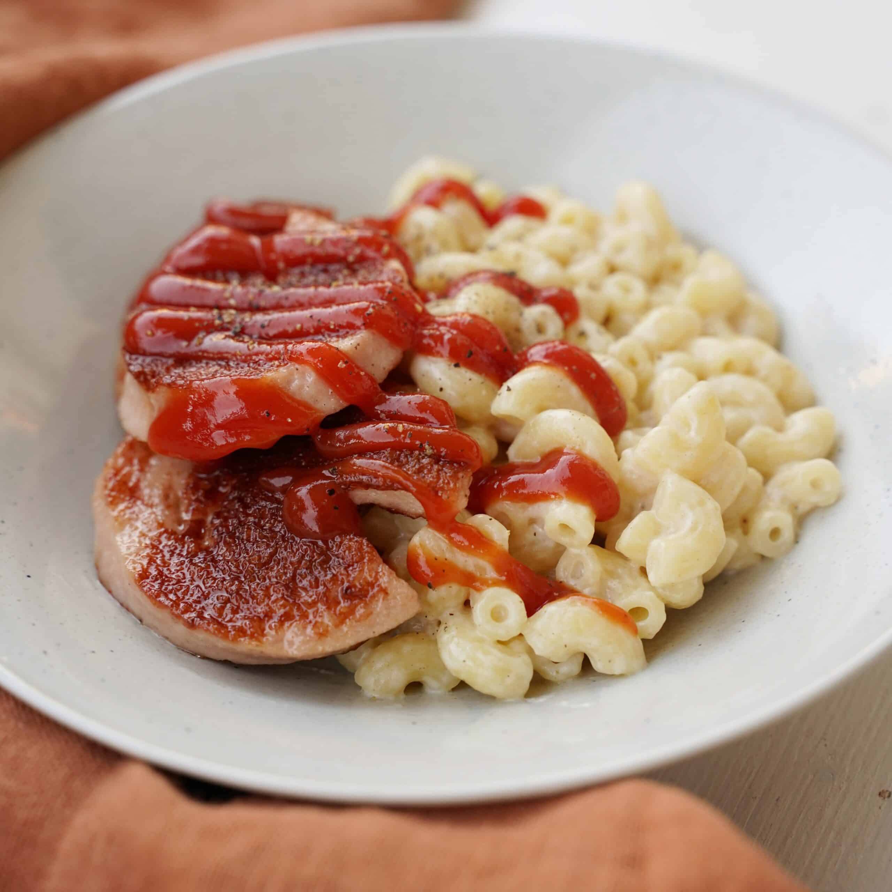

Recept 2 - Falukorv och mackaroner

🍽️ Falukorv med makaroner (4 portioner)
Ingredienser:
400 g falukorv
5 dl snabbmakaroner
1 liter vatten
1 tsk salt
1 msk smör eller olja
Till servering (valfritt):
Ketchup
Senap
Grönsallad
Så här gör du:
Makaroner:
Koka upp vatten i en kastrull.
Tillsätt salt och häll i makaronerna.
Koka enligt anvisningarna på förpackningen (ca 7–8 minuter).
Häll av vattnet och rör ner lite smör så att de inte klibbar.
Falukorv:
Skiva falukorven i ca 1 cm tjocka skivo